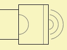

Bassunit
| Home | LE-Part | Bassunit Tool | Electro-acoustic |
 |
Bassunit specifies the compact model of an electro-dynamic loudspeaker mounted in a sealed or vented enclosure. It is driven by two-poles of the electrical domain. Optionally there can be specified a second order high-pass filter.
The Bassunit component is an implementation of the classic Thiele/Small/Benson
model [33].
The Bassunit features a special approximate model. This model yields a
simplified form of transfer function for the pressure response. In this way
well known filter alignments from telecommunication can be directly projected onto the
pressure response of the speaker. Hence we can tune the parameters of the speaker system
all at once, and we can be sure that the speaker system will feature the same properties as the
filter alignment, such as cut-off frequency, quality factors and power loading.
See chapter Bassunit Tool.
Parameters
| Caption | String | Name of component |
| Formula | String | Formula of parameters |
| Diaph | Ref or value | Diaphragm size |
| Mms | kg | Mass of vibrating assembly |
| Kms | N/m | Total stiffness of suspensions |
| Rms | Ns/m | Mechanic resistance |
| fs | Hz | Fundamental Resonance |
| Qms | Mechanical Quality Factor | |
| Creep | Factor of creep-formula | |
| Re | Ω | Voice coil resistance at DC. |
| BL | N/A | Force Factor of motor. |
| Qes | Electrical Quality Factor. | |
| VC | HF voice coil parameters. | |
| Model | [Closed, Vented, Closed Filtered, Vented Filtered] | |
| Vb | m3 | Volume |
| fb | Hz | Helmholtz Resonance |
| eta | Damping factor of enclosure η | |
| fe | Hz | Filter frequency |
| Qe | Hz | Quality factor of highpass filter |
| Xmax | m | Maximum excursion |
| Ref to P-Source | Link to BEM pressure sources | For radiation analysis |
Diaph
The size of the diaphragm can be specified by value only.
The model of the Bassunit does not add any radiation impedance components.
With the Bassunit there are no corrections to the parameters, such as end-correction due
to mass-load or radiation impedance. It is assumed that all such effects are
amalgamed into the parameters of the Bassunit.
Optionally radiation can be observed if a link to a pressure source is provided.
Model
Model selects whether the speaker is coupled to a Closed or Vented enclosure. If the Bassunit shall take into account a highpass filter then select Closed Filtered or Vented Filtered, respectively.
Vb
Vb is the effective volume of the enclosure.
fb
fb specifies the Helmholtz resonance of the vented enclosure.
Eta
η is the damping factor according to losses inside the enclosure and vent. η is a practical parameter of acoustic losses inside waveguides. The derivation and relation to old Akabaks "Q/f0" is described at chapter Duct. Hence Thiele/Smalls' quality factor of the enclosure is Qb = 2π/c·1/η·fb ≈ fb/(55·η)
fe and Qe
fe and Qe are the filter frequency and quality factor of the optional highpass filter which the Bassunit shall take into account. The filter is of second order. Its transfer function is:

with normalized frequency variable Se = jω/ωe
Xmax
Xmax is the maximum excursion the speaker can perform for a reasonable amount of distortion. Xmax is measured from rest-position to peak displacement. Xmax is used by the tool of Bassunit in order to predict the maximum of related performance parameters. See also discussion at [40].
See also
LE Diaphragm Derivation, LE Electro-Dyn-Model, LE Electro-Dyn-Qts, Enclosure
Formula
The name of the parameters are equal to the formula-identifiers:
|
| ||||||||||||||||
| |||||||||||||||||